Chapitre VI — Axis, Mezzo, Herma, Beauté, Haut, Hexa
Pages 025 à 062C du livre · chapitre 6 sur 7
Chapitre VI de La Livrée d'Hermès : Axis, Mezzo, Herma, Beauté, Haut et Hexa. Les nombres pairs impairs et le carré magique d'ordre 6, le carré solaire et la croix ansée, les 64 fleurs, et « Crépuscule » d'Apollinaire.
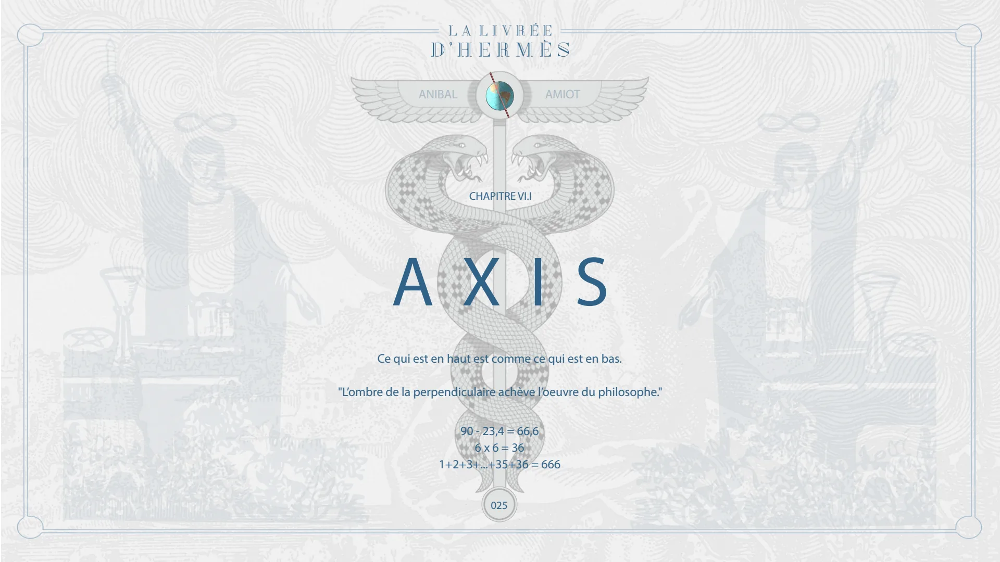
CHAPITRE VI.I
AXIS
ANIBAL
AMIOT
Ce qui est en haut est comme ce qui est en bas.
"L’ombre de la perpendiculaire achève l’oeuvre du philosophe."
90 - 23,4 = 66,6 6 x 6 = 36 1+2+3+...+35+36 = 666
025
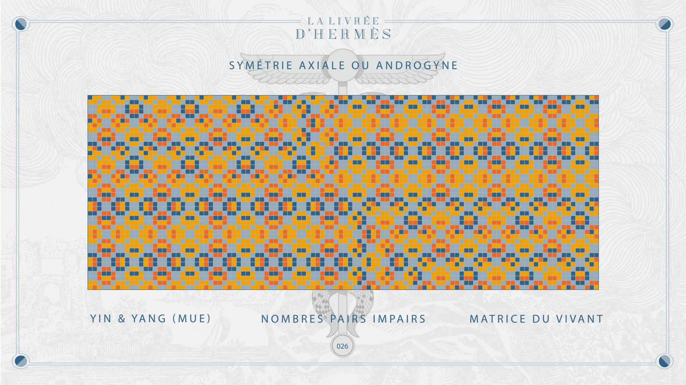
YIN & YANG (MUE)
SYMÉTRIE AXIALE OU ANDROGYNE
NOMBRES PAIRS IMPAIRS
026
MATRICE DU VIVANT
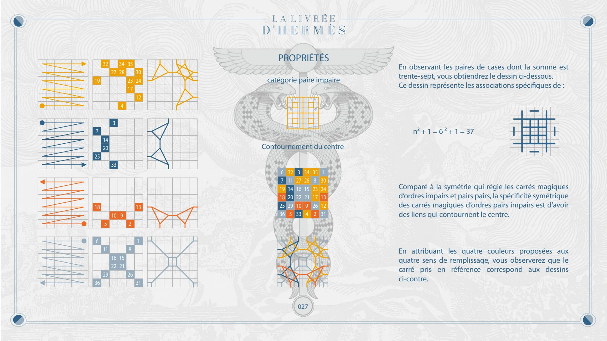
19 19 7 7 32 32 34 35 34 35 27 28 27 28 3 3 4 4 30 23 24 17 30 23 24 17 12 12
PROPRIÉTÉS
catégorie paire impaire
En observant les paires de cases dont la somme est trente-sept, vous obtiendrez le dessin ci-dessous. Ce dessin représente les associations spécifiques de :
n² + 1 = 6 ² + 1 = 37
25 25 18 18 14 20 14 20 5 5 33 33 10 9 10 9 2 2 13 13 Contournement du centre 6 7 19 18 25 36 32 11 14 20 29 5 3 34 35 8 1 30 27 28 16 15 22 21 10 9 4 23 24 17 26 2 13 12 31 33
Comparé à la symétrie qui régie les carrés magiques d’ordres impairs et pairs pairs, la spécificité symétrique des carrés magiques d’ordres pairs impairs est d’avoir des liens qui contournent le centre.
6 6 36 36 11 11 29 29 16 15 22 21 16 15 22 21 8 8 26 26 1 1 31 31
En attribuant les quatre couleurs proposées aux quatre sens de remplissage, vous observerez que le carré pris en référence correspond aux dessins ci-contre.
027
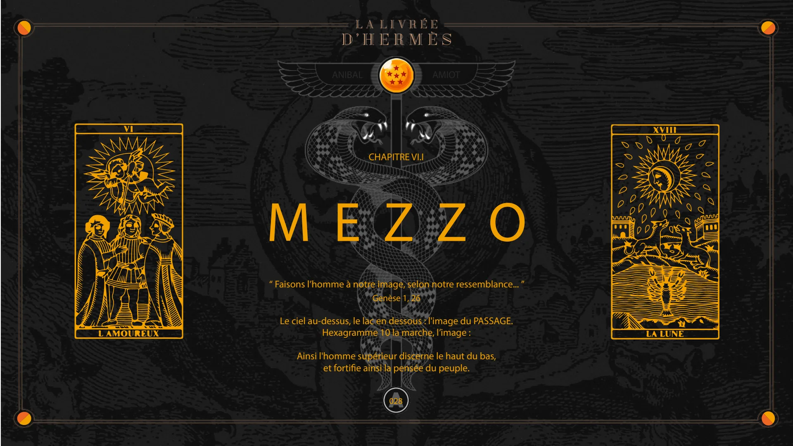
CHAPITRE VI.I
MEZZO
ANIBAL
AMIOT
“ Faisons l’homme à notre image, selon notre ressemblance... ” Genèse 1, 26
Le ciel au-dessus, le lac en dessous : l'image du PASSAGE. Hexagramme 10 la marche, l’image :
Ainsi l'homme supérieur discerne le haut du bas, et fortifie ainsi la pensée du peuple.
A 028
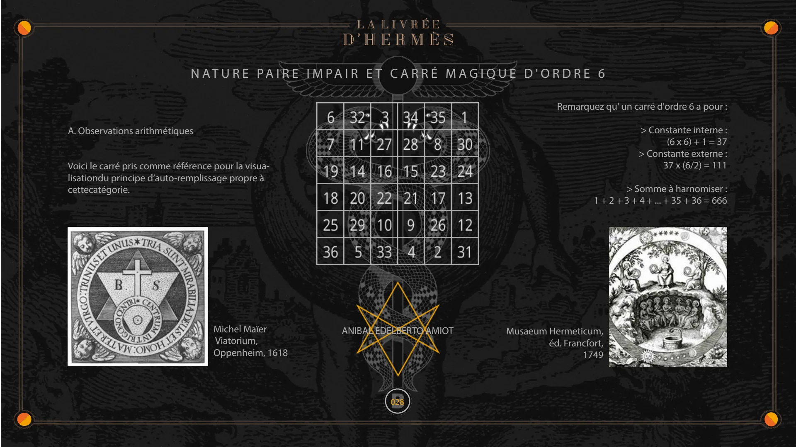
NATURE PAIRE IMPAIR ET CARRÉ MAGIQUE D'ORDRE 6
A. Observations arithmétiques
Voici le carré pris comme référence pour la visualisationdu principe d’auto-remplissage propre à cettecatégorie.
Michel Maïer Viatorium, Oppenheim, 1618
ANIBAL EDELBERTO AMIOT
Remarquez qu' un carré d'ordre 6 a pour :
> Constante interne : (6 x 6) + 1 = 37 > Constante externe : 37 x (6/2) = 111
> Somme à harnomiser : 1 + 2 + 3 + 4 + ... + 35 + 36 = 666
Musaeum Hermeticum, éd. Francfort, 1749
B 028
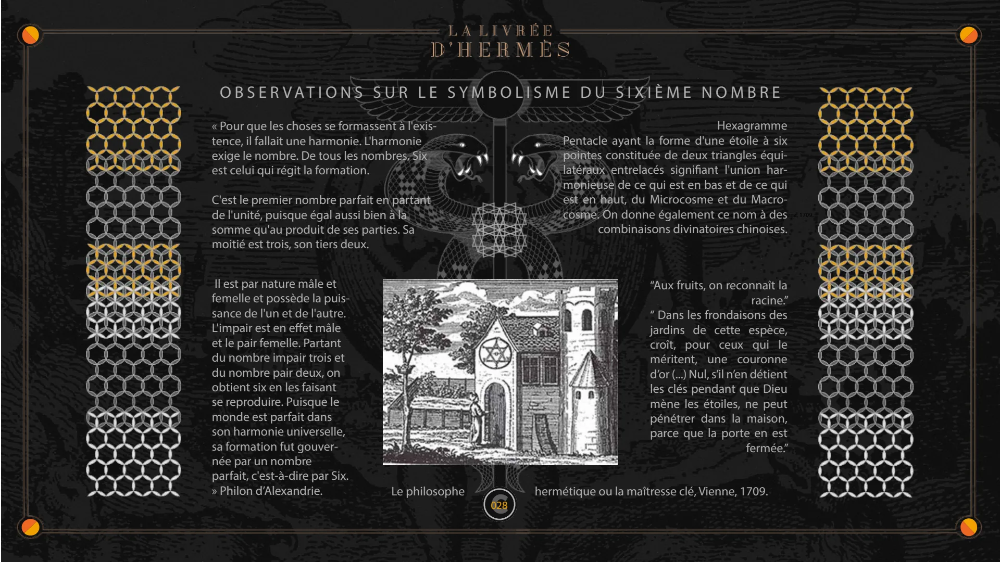
OBSERVATIONS SUR LE SYMBOLISME DU SIXIÈME NOMBRE
« Pour que les choses se formassent à l'existence, il fallait une harmonie. L'harmonie exige le nombre. De tous les nombres, Six est celui qui régit la formation.
C'est le premier nombre parfait en partant de l'unité, puisque égal aussi bien à la somme qu'au produit de ses parties. Sa moitié est trois, son tiers deux.
Il est par nature mâle et femelle et possède la puissance de l'un et de l'autre. L'impair est en effet mâle et le pair femelle. Partant du nombre impair trois et du nombre pair deux, on obtient six en les faisant se reproduire. Puisque le monde est parfait dans son harmonie universelle, sa formation fut gouvernée par un nombre parfait, c'est-à-dire par Six. » Philon d’Alexandrie.
Le philosophe hermétique ou la maîtresse clé, Vienne, 1709.
C
Hexagramme Pentacle ayant la forme d'une étoile à six pointes constituée de deux triangles équilatéraux entrelacés signifiant l'union harmonieuse de ce qui est en bas et de ce qui est en haut, du Microcosme et du Macrocosme. On donne également ce nom à des combinaisons divinatoires chinoises.
hermético o la llave maestra, Viena, 1709.�
“Aux fruits, on reconnaît la racine.” “ Dans les frondaisons des jardins de cette espèce, croît, pour ceux qui le méritent, une couronne d’or (...) Nul, s’il n’en détient les clés pendant que Dieu mène les étoiles, ne peut pénétrer dans la maison, parce que la porte en est fermée.”
028
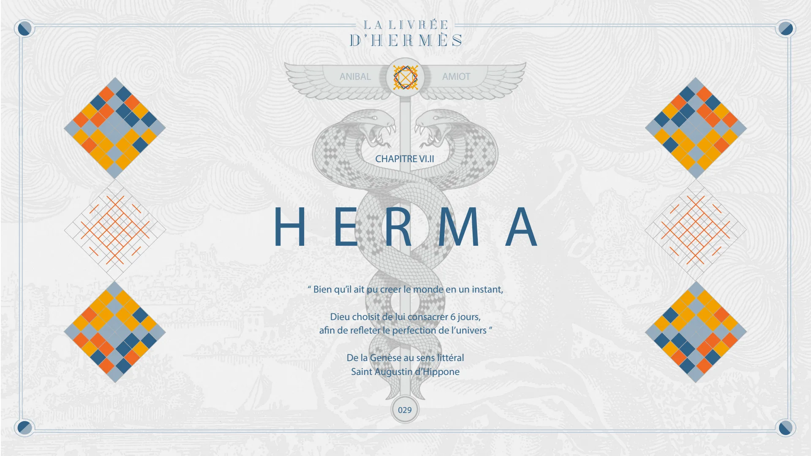
CHAPITRE VI.II
HERMA
ANIBAL
AMIOT
“ Bien qu’il ait pu creer le monde en un instant,
Dieu choisit de lui consacrer 6 jours, afin de refleter le perfection de l’univers ”
De la Genèse au sens littéral Saint Augustin d’Hippone
029
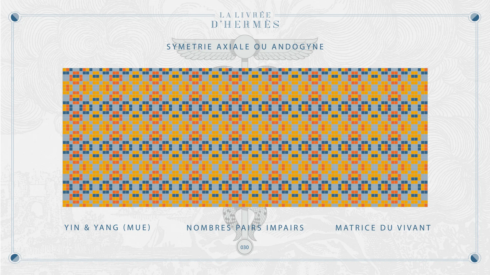
YIN & YANG (MUE)
SYMETRIE AXIALE OU ANDOGYNE
NOMBRES PAIRS IMPAIRS
030
MATRICE DU VIVANT
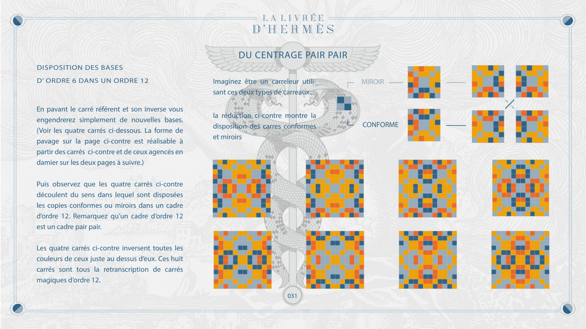
DU CENTRAGE PAIR PAIR
DISPOSITION DES BASES D’ ORDRE 6 DANS UN ORDRE 12
En pavant le carré référent et son inverse vous engendrerez simplement de nouvelles bases. (Voir les quatre carrés ci-dessous. La forme de pavage sur la page ci-contre est réalisable à partir des carrés ci-contre et de ceux agencés en damier sur les deux pages à suivre.)
Puis observez que les quatre carrés ci-contre découlent du sens dans lequel sont disposées les copies conformes ou miroirs dans un cadre d’ordre 12. Remarquez qu’un cadre d’ordre 12 est un cadre pair pair.
Les quatre carrés ci-contre inversent toutes les couleurs de ceux juste au dessus d’eux. Ces huit carrés sont tous la retranscription de carrés magiques d’ordre 12.
Imaginez être un carreleur utilisant ces deux types de carreaux...
MIROIR
la réduction ci-contre montre la disposition des carres conformes et miroirs
CONFORME
031
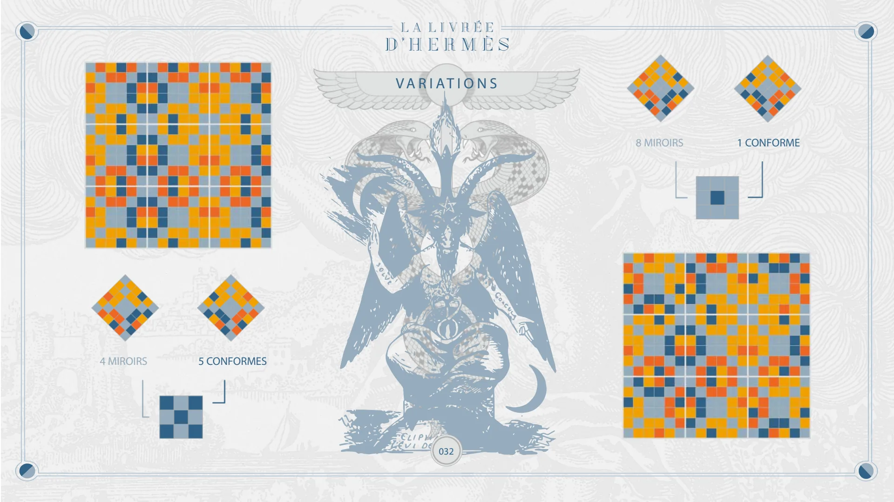
4 MIROIRS
5 CONFORMES
VARIATIONS
032
8 MIROIRS
1 CONFORME
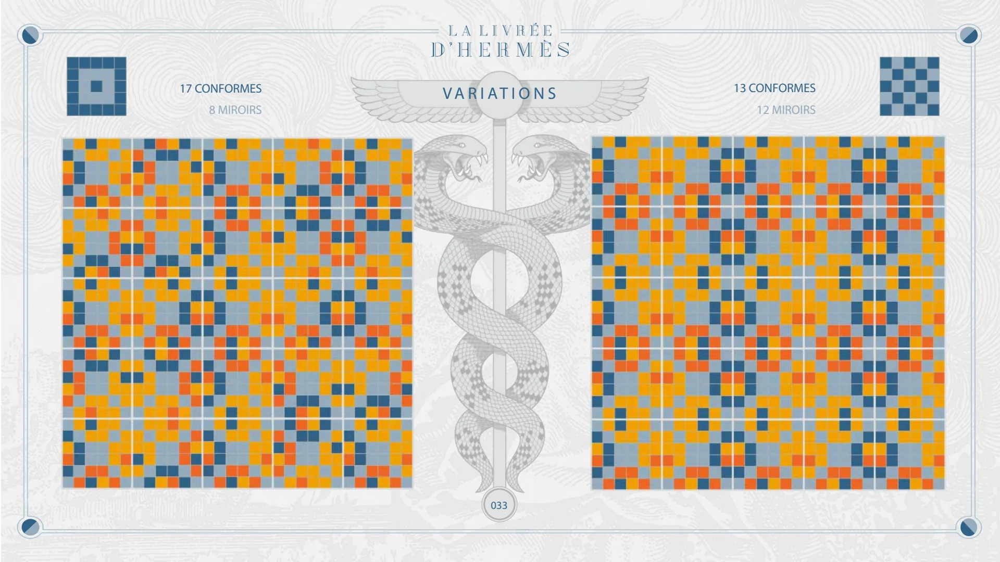
17 CONFORMES 8 MIROIRS
VARIATIONS
033
13 CONFORMES 12 MIROIRS
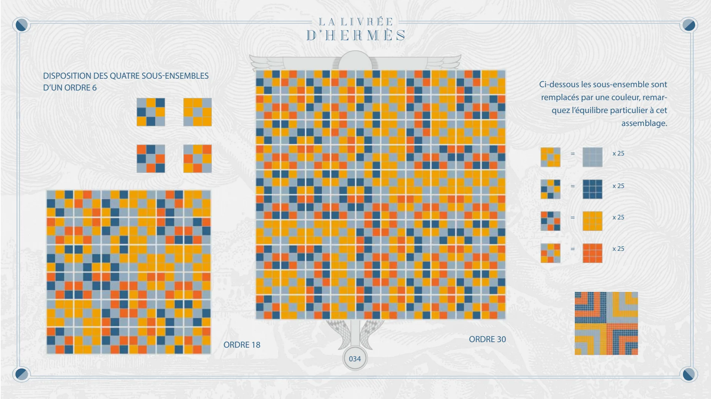
DISPOSITION DES QUATRE SOUS-ENSEMBLES D’UN ORDRE 6
Ci-dessous les sous-ensemble sont remplacés par une couleur, remarquez l’équilibre particulier à cet assemblage.
ORDRE 18
034
ORDRE 30
= = = = x 25 x 25 x 25 x 25
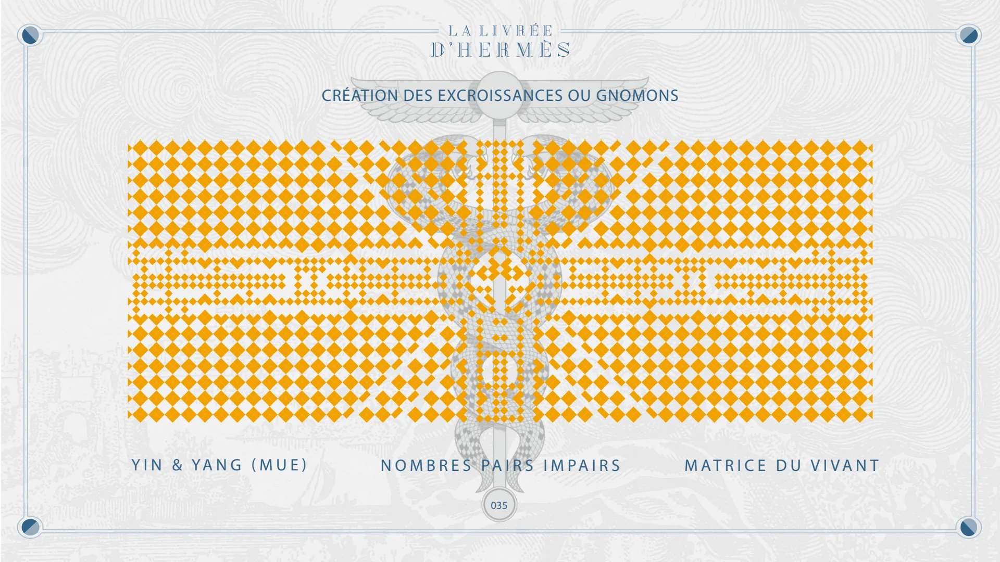
YIN & YANG (MUE)
CRÉATION DES EXCROISSANCES OU GNOMONS
NOMBRES PAIRS IMPAIRS
035
MATRICE DU VIVANT
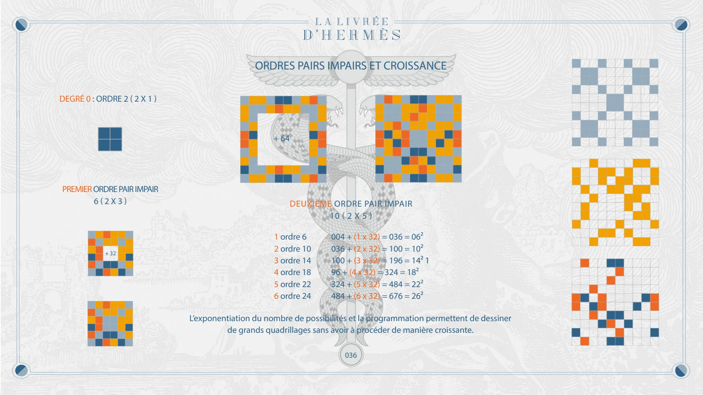
ORDRES PAIRS IMPAIRS ET CROISSANCE
DEUXIÈME ORDRE PAIR IMPAIR 10 ( 2 X 5 )
DEGRÉ 0 : ORDRE 2 ( 2 X 1 )
PREMIER ORDRE PAIR IMPAIR 6 ( 2 X 3 )
+ 32 + 64
1 ordre 6 2 ordre 10 3 ordre 14 4 ordre 18 5 ordre 22 6 ordre 24
004 + (1 x 32) = 036 = 06² 036 + (2 x 32) = 100 = 10² 100 + (3 x 32) = 196 = 14² 1 96 + (4 x 32) = 324 = 18² 324 + (5 x 32) = 484 = 22² 484 + (6 x 32) = 676 = 26²
L’exponentiation du nombre de possibilités et la programmation permettent de dessiner de grands quadrillages sans avoir à procéder de manière croissante.
036
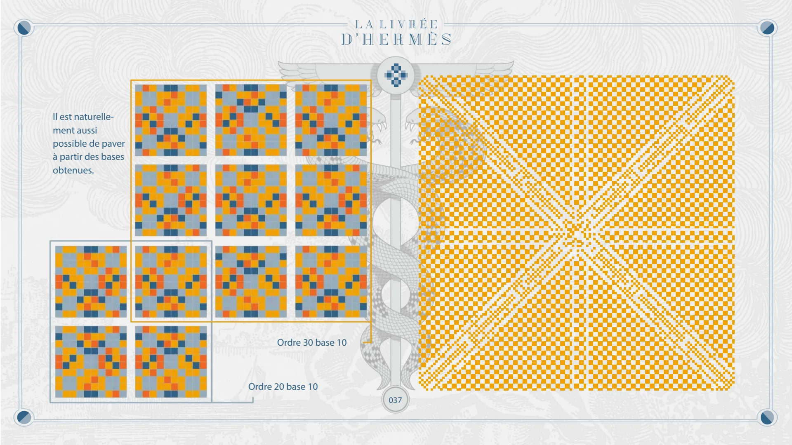
Il est naturellement aussi possible de paver à partir des bases obtenues.
Ordre 30 base 10
Ordre 20 base 10
037
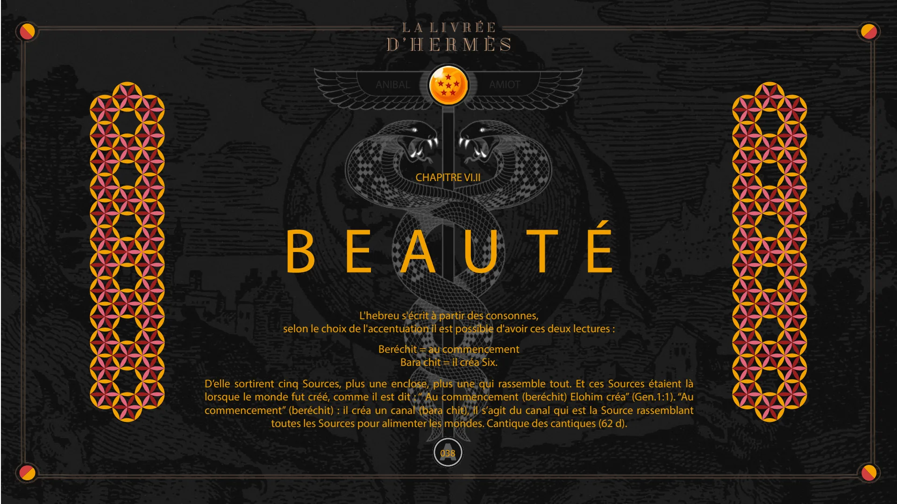
CHAPITRE VI.II
BEAUTÉ
ANIBAL
AMIOT
L'hebreu s'écrit à partir des consonnes, selon le choix de l'accentuation il est possible d'avoir ces deux lectures : Beréchit = au commencement Bara chit = il créa Six. D’elle sortirent cinq Sources, plus une enclose, plus une qui rassemble tout. Et ces Sources étaient là lorsque le monde fut créé, comme il est dit : “ Au commencement (beréchit) Elohim créa” (Gen.1:1). “Au commencement” (beréchit) : il créa un canal (bara chit), il s’agit du canal qui est la Source rassemblant toutes les Sources pour alimenter les mondes. Cantique des cantiques (62 d).
A 038
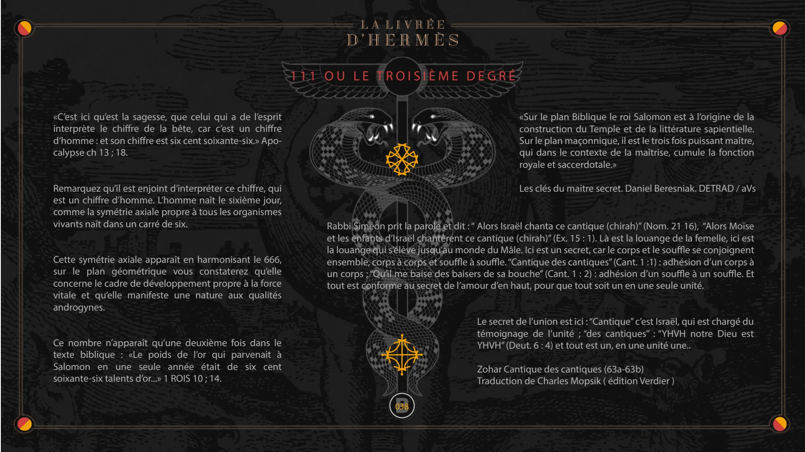
111 OU LE TROISIÈME DEGRÉ
«C’est ici qu’est la sagesse, que celui qui a de l’esprit interprète le chiffre de la bête, car c’est un chiffre d’homme : et son chiffre est six cent soixante-six.» Apocalypse ch 13 ; 18.
Remarquez qu’il est enjoint d’interpréter ce chiffre, qui est un chiffre d’homme. L’homme naît le sixième jour, comme la symétrie axiale propre à tous les organismes vivants naît dans un carré de six.
Cette symétrie axiale apparaît en harmonisant le 666, sur le plan géométrique vous constaterez qu’elle concerne le cadre de développement propre à la force vitale et qu’elle manifeste une nature aux qualités androgynes.
Ce nombre n’apparaît qu’une deuxième fois dans le texte biblique : «Le poids de l’or qui parvenait à Salomon en une seule année était de six cent soixante-six talents d’or...» 1 ROIS 10 ; 14.
«Sur le plan Biblique le roi Salomon est à l’origine de la construction du Temple et de la littérature sapientielle. Sur le plan maçonnique, il est le trois fois puissant maître, qui dans le contexte de la maîtrise, cumule la fonction royale et saccerdotale.»
Les clés du maitre secret. Daniel Beresniak. DETRAD / aVs
Rabbi Siméon prit la parole et dit : “ Alors Israël chanta ce cantique (chirah)” (Nom. 21 16), “Alors Moïse et les enfants d’Israël chantèrent ce cantique (chirah)” (Ex. 15 : 1). Là est la louange de la femelle, ici est la louange qui s’élève jusqu’au monde du Mâle. Ici est un secret, car le corps et le souffle se conjoignent ensemble, corps à corps et souffle à souffle. “Cantique des cantiques” (Cant. 1 :1) : adhésion d’un corps à un corps ; “Qu’il me baise des baisers de sa bouche” (Cant. 1 : 2) : adhésion d’un souffle à un souffle. Et tout est conforme au secret de l’amour d’en haut, pour que tout soit un en une seule unité.
Le secret de l’union est ici : “Cantique” c’est Israël, qui est chargé du témoignage de l’unité ; “des cantiques” : “YHVH notre Dieu est YHVH” (Deut. 6 : 4) et tout est un, en une unité une..
Zohar Cantique des cantiques (63a-63b) Traduction de Charles Mopsik ( édition Verdier )
B 038
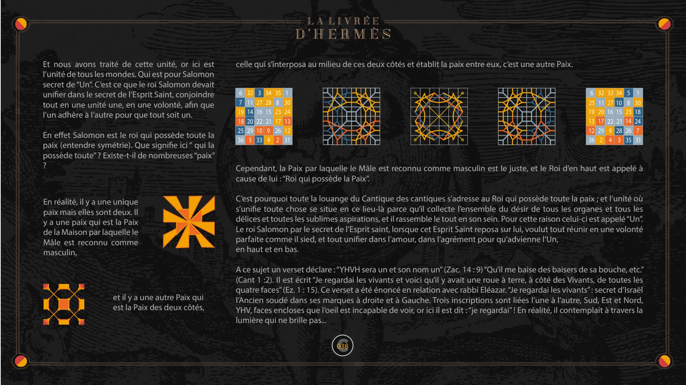
Et nous avons traité de cette unité, or ici est l’unité de tous les mondes. Qui est pour Salomon secret de “Un”. C’est ce que le roi Salomon devait unifier dans le secret de l’Esprit Saint, conjoindre tout en une unité une, en une volonté, afin que l’un adhère à l’autre pour que tout soit un.
En effet Salomon est le roi qui possède toute la paix (entendre symétrie). Que signifie ici “ qui la possède toute” ? Existe-t-il de nombreuses “paix” ?
En réalité, il y a une unique paix mais elles sont deux. Il y a une paix qui est la Paix de la Maison par laquelle le Mâle est reconnu comme masculin, et il y a une autre Paix qui est la Paix des deux côtés, celle qui s’interposa au milieu de ces deux côtés et établit la paix entre eux, c’est une autre Paix.
3 34 35 8 1 30 33 27 34 10 6 7 19 18 25 36 32 11 14 20 29 5 27 28 16 15 22 21 10 9 4 33 23 24 17 26 2 13 12 31 6 25 19 13 12 36 32 11 20 17 29 2 16 15 22 21 9 4 28 3 5 8 23 14 26 35 1 30 18 24 7 31
Cependant, la Paix par laquelle le Mâle est reconnu comme masculin est le juste, et le Roi d’en haut est appelé à cause de lui : “Roi qui possède la Paix”.
C’est pourquoi toute la louange du Cantique des cantiques s’adresse au Roi qui possède toute la paix ; et l’unité où s’unifie toute chose se situe en ce lieu-là parce qu’il collecte l’ensemble du désir de tous les organes et tous les délices et toutes les sublimes aspirations, et il rassemble le tout en son sein. Pour cette raison celui-ci est appelé “Un”. Le roi Salomon par le secret de l’Esprit saint, lorsque cet Esprit Saint reposa sur lui, voulut tout réunir en une volonté parfaite comme il sied, et tout unifier dans l’amour, dans l’agrément pour qu’advienne l’Un, en haut et en bas.
A ce sujet un verset déclare : “YHVH sera un et son nom un” (Zac. 14 : 9) “Qu’il me baise des baisers de sa bouche, etc.” (Cant 1 :2). Il est écrit “Je regardai les vivants et voici qu’il y avait une roue à terre, à côté des Vivants, de toutes les quatre faces” (Ez. 1 : 15). Ce verset a été énoncé en relation avec rabbi Eléazar. “Je regardai les vivants” : secret d’Israël l’Ancien soudé dans ses marques à droite et à Gauche. Trois inscriptions sont liées l’une à l’autre, Sud, Est et Nord, YHV, faces encloses que l’oeil est incapable de voir, or ici il est dit : “je regardai” ! En réalité, il contemplait à travers la lumière qui ne brille pas...
C 038
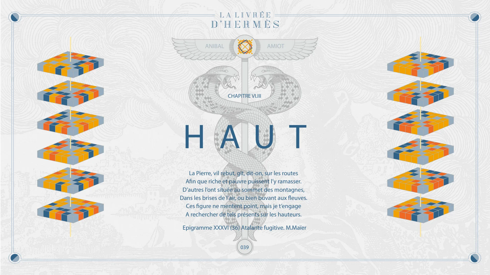
CHAPITRE VI.III
HAUT
ANIBAL
AMIOT
La Pierre, vil rebut, gît, dit-on, sur les routes Afin que riche et pauvre puissent l’y ramasser. D’autres l’ont située au sommet des montagnes, Dans les brises de l’air, ou bien buvant aux fleuves. Ces figure ne mentent point, mais je t’engage A rechercher de tels présents sur les hauteurs.
Epigramme XXXVI (36) Atalante fugitive. M.Maïer
039
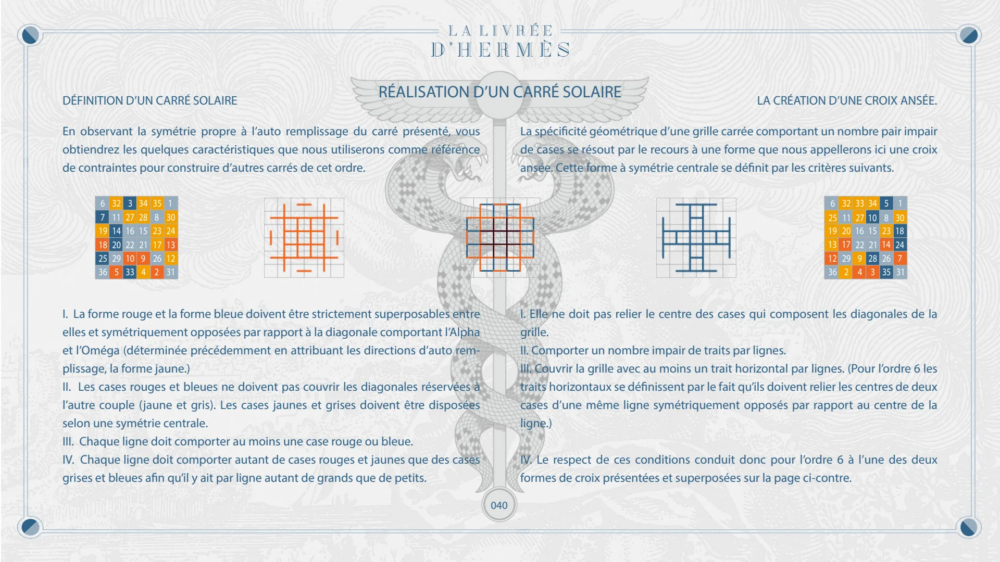
RÉALISATION D’UN CARRÉ SOLAIRE
DÉFINITION D’UN CARRÉ SOLAIRE
En observant la symétrie propre à l’auto remplissage du carré présenté, vous obtiendrez les quelques caractéristiques que nous utiliserons comme référence de contraintes pour construire d’autres carrés de cet ordre.
6 7 19 18 25 36 32 11 14 20 29 5 3 34 35 8 1 30 27 28 16 15 22 21 10 9 4 33 23 24 17 26 2 13 12 31
I. La forme rouge et la forme bleue doivent être strictement superposables entre elles et symétriquement opposées par rapport à la diagonale comportant l’Alpha et l’Oméga (déterminée précédemment en attribuant les directions d’auto remplissage, la forme jaune.) II. Les cases rouges et bleues ne doivent pas couvrir les diagonales réservées à l’autre couple (jaune et gris). Les cases jaunes et grises doivent être disposées selon une symétrie centrale. III. Chaque ligne doit comporter au moins une case rouge ou bleue. IV. Chaque ligne doit comporter autant de cases rouges et jaunes que des cases grises et bleues afin qu’il y ait par ligne autant de grands que de petits.
LA CRÉATION D’UNE CROIX ANSÉE.
La spécificité géométrique d’une grille carrée comportant un nombre pair impair de cases se résout par le recours à une forme que nous appellerons ici une croix ansée. Cette forme à symétrie centrale se définit par les critères suivants.
6 25 19 13 12 36 32 11 20 17 29 2 33 27 34 10 5 8 23 14 26 35 1 30 18 24 7 31 16 15 22 21 28 3 9 4
I. Elle ne doit pas relier le centre des cases qui composent les diagonales de la grille. II. Comporter un nombre impair de traits par lignes. III. Couvrir la grille avec au moins un trait horizontal par lignes. (Pour l’ordre 6 les traits horizontaux se définissent par le fait qu’ils doivent relier les centres de deux cases d’une même ligne symétriquement opposés par rapport au centre de la ligne.)
IV. Le respect de ces conditions conduit donc pour l’ordre 6 à l’une des deux formes de croix présentées et superposées sur la page ci-contre.
040
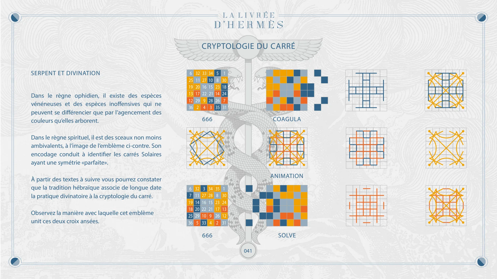
CRYPTOLOGIE DU CARRÉ
SERPENT ET DIVINATION
Dans le règne ophidien, il existe des espèces vénéneuses et des espèces inoffensives qui ne peuvent se différencier que par l’agencement des couleurs qu’elles arborent.
6 25 19 13 12 36 32 11 20 17 29 2 33 27 34 10 16 15 22 21 9 4 28 3 666 5 8 23 14 26 35 1 30 18 24 7 31
COAGULA
Dans le règne spirituel, il est des sceaux non moins ambivalents, à l’image de l’emblème ci-contre. Son encodage conduit à identifier les carrés Solaires ayant une symétrie «parfaite».
À partir des textes à suivre vous pourrez constater que la tradition hébraïque associe de longue date la pratique divinatoire à la cryptologie du carré.
3 34 35 8 1 30
ANIMATION
Observez la manière avec laquelle cet emblème unit ces deux croix ansées.
6 7 19 18 25 36 32 11 14 20 29 5 27 28 16 15 22 21 10 9 4 33 23 24 17 26 2 13 12 31 666 041
SOLVE
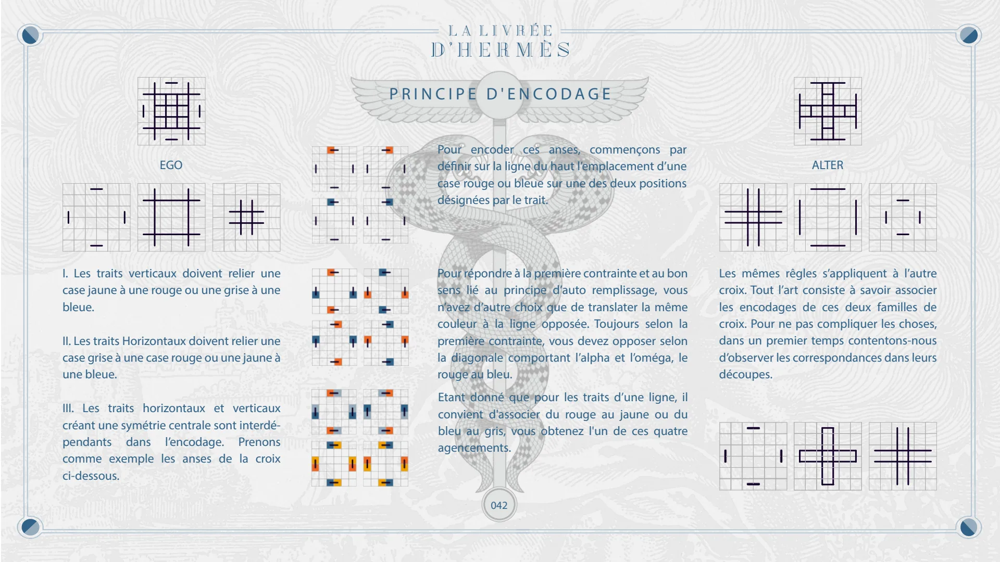
PRINCIPE D'ENCODAGE
EGO
I. Les traits verticaux doivent relier une case jaune à une rouge ou une grise à une bleue.
II. Les traits Horizontaux doivent relier une case grise à une case rouge ou une jaune à une bleue.
III. Les traits horizontaux et verticaux créant une symétrie centrale sont interdépendants dans l’encodage.
Prenons comme exemple les anses de la croix ci-dessous.
Pour encoder ces anses, commençons par définir sur la ligne du haut l’emplacement d’une case rouge ou bleue sur une des deux positions désignées par le trait.
Pour répondre à la première contrainte et au bon sens lié au principe d’auto remplissage, vous n’avez d’autre choix que de translater la même couleur à la ligne opposée. Toujours selon la première contrainte, vous devez opposer selon la diagonale comportant l’alpha et l’oméga, le rouge au bleu. Etant donné que pour les traits d’une ligne, il convient d'associer du rouge au jaune ou du bleu au gris, vous obtenez l'un de ces quatre agencements.
ALTER
Les mêmes rêgles s’appliquent à l’autre croix. Tout l’art consiste à savoir associer les encodages de ces deux familles de croix. Pour ne pas compliquer les choses, dans un premier temps contentons-nous d’observer les correspondances dans leurs découpes.
042
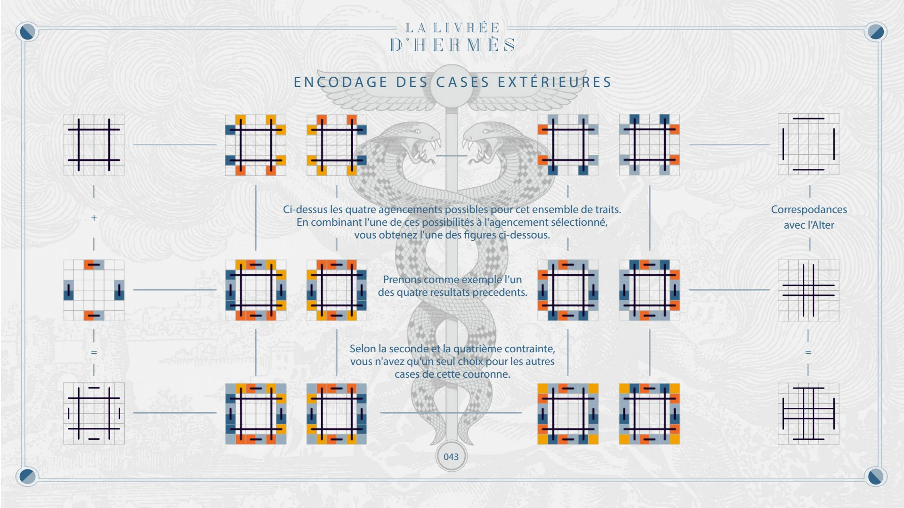
ENCODAGE DES CASES EXTÉRIEURES
+
Ci-dessus les quatre agencements possibles pour cet ensemble de traits. En combinant l'une de ces possibilités à l'agencement sélectionné, vous obtenez l'une des figures ci-dessous.
Correspodances avec l’Alter
Prenons comme exemple l’un des quatre resultats precedents.
=
Selon la seconde et la quatrième contrainte, vous n'avez qu'un seul choix pour les autres cases de cette couronne.
= 043
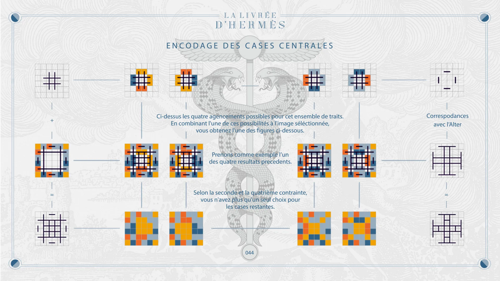
ENCODAGE DES CASES CENTRALES
+
Ci-dessus les quatre agencements possibles pour cet ensemble de traits. En combinant l'une de ces possibilités à l'image séléctionnée, vous obtenez l'une des figures ci-dessous.
Correspodances avec l’Alter
Prenons comme exemple l’un des quatre resultats precedents.
=
Selon la seconde et la quatrième contrainte, vous n'avez plus qu'un seul choix pour les cases restantes.
= 044
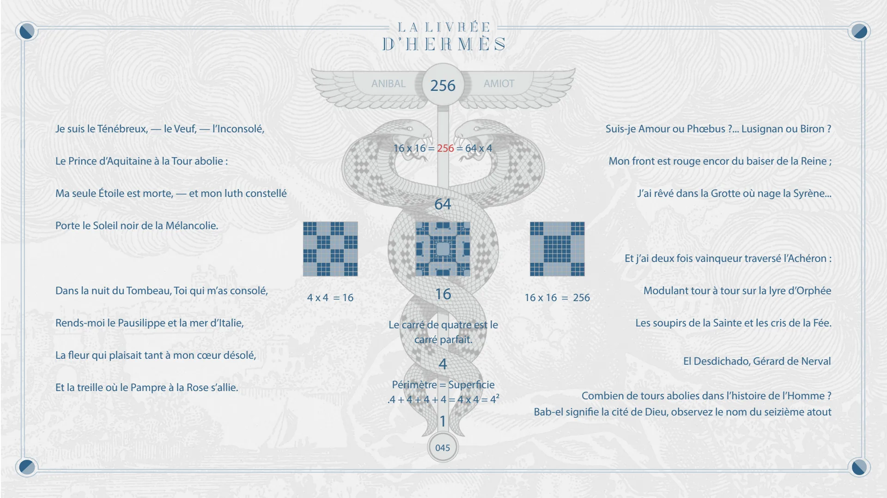
256
Je suis le Ténébreux, — le Veuf, — l’Inconsolé,
Le Prince d’Aquitaine à la Tour abolie :
Ma seule Étoile est morte, — et mon luth constellé
Porte le Soleil noir de la Mélancolie.
Dans la nuit du Tombeau, Toi qui m’as consolé,
4 x 4 = 16
Rends-moi le Pausilippe et la mer d’Italie,
La fleur qui plaisait tant à mon cœur désolé,
Et la treille où le Pampre à la Rose s’allie.
ANIBAL
AMIOT
16 x 16 = 256 = 64 x 4
64 16
Le carré de quatre est le carré parfait.
4
Périmètre = Superficie .4 + 4 + 4 + 4 = 4 x 4 = 4²
1
Suis-je Amour ou Phœbus ?... Lusignan ou Biron ?
Mon front est rouge encor du baiser de la Reine ;
J’ai rêvé dans la Grotte où nage la Syrène...
Et j’ai deux fois vainqueur traversé l’Achéron :
16 x 16 = 256
Modulant tour à tour sur la lyre d’Orphée
Les soupirs de la Sainte et les cris de la Fée.
El Desdichado, Gérard de Nerval
Combien de tours abolies dans l’histoire de l’Homme ? Bab-el signifie la cité de Dieu, observez le nom du seizième atout
045
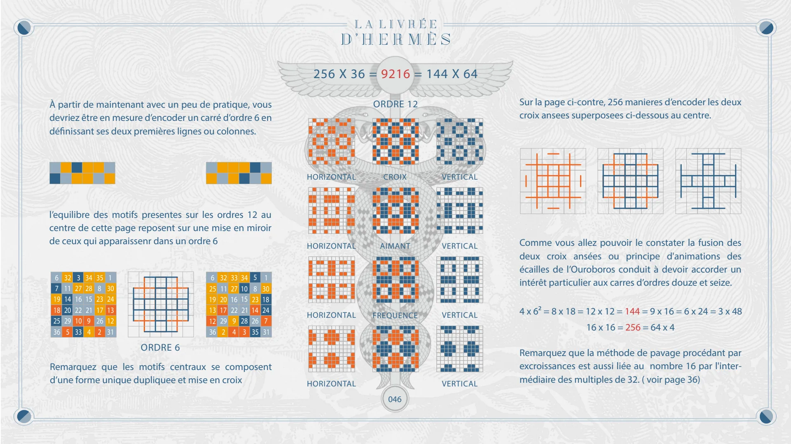
256 X 36 = 9216 = 144 X 64
À partir de maintenant avec un peu de pratique, vous devriez être en mesure d’encoder un carré d’ordre 6 en définissant ses deux premières lignes ou colonnes.
ORDRE 12
l’equilibre des motifs presentes sur les ordres 12 au centre de cette page reposent sur une mise en miroir de ceux qui apparaissenr dans un ordre 6
3 34 35 8 1 30 33 27 34 10
HORIZONTAL
HORIZONTAL
CROIX
AIMANT
6 7 19 18 25 36 32 11 14 20 29 5 27 28 16 15 22 21 10 9 4 33 23 24 17 26 2 13 12 31 6 25 19 13 12 36 32 11 20 17 29 2 16 15 22 21 9 4 28 3 5 8 23 14 26 35 1 30 18 24 7 31
ORDRE 6
Remarquez que les motifs centraux se composent d’une forme unique dupliquee et mise en croix
HORIZONTAL
HORIZONTAL
FREQUENCE
VERTICAL
Sur la page ci-contre, 256 manieres d’encoder les deux croix ansees superposees ci-dessous au centre.
VERTICAL
VERTICAL
Comme vous allez pouvoir le constater la fusion des deux croix ansées ou principe d'animations des écailles de l’Ouroboros conduit à devoir accorder un intérêt particulier aux carres d’ordres douze et seize.
VERTICAL
4 x 6² = 8 x 18 = 12 x 12 = 144 = 9 x 16 = 6 x 24 = 3 x 48 16 x 16 = 256 = 64 x 4
Remarquez que la méthode de pavage procédant par excroissances est aussi liée au nombre 16 par l'intermédiaire des multiples de 32. ( voir page 36)
046
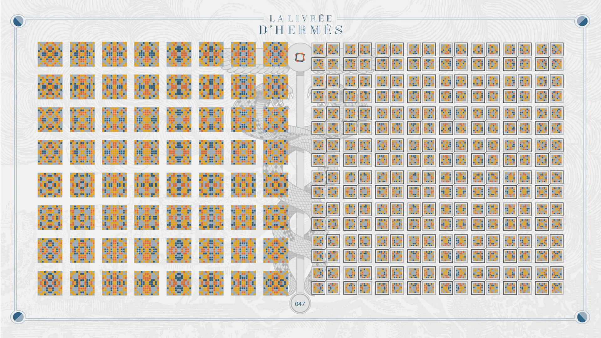
047
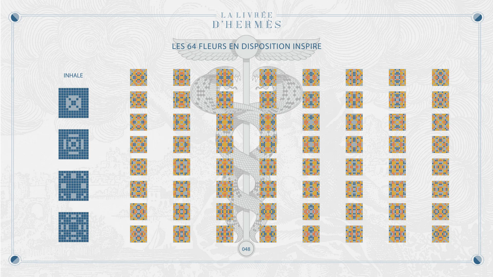
INHALE
LES 64 FLEURS EN DISPOSITION INSPIRE
048
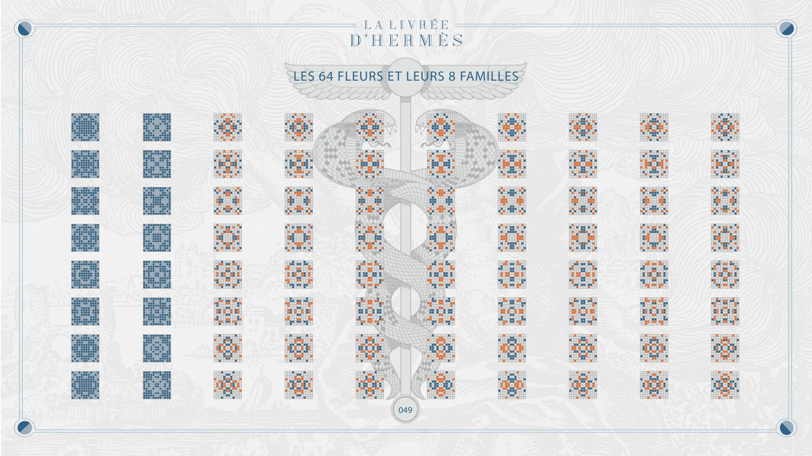
LES 64 FLEURS ET LEURS 8 FAMILLES
049
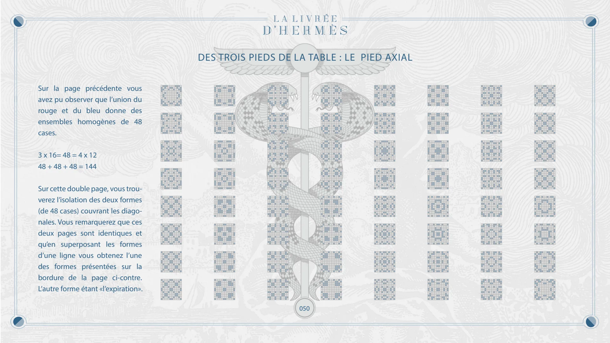
DES TROIS PIEDS DE LA TABLE : LE PIED AXIAL
Sur la page précédente vous avez pu observer que l’union du rouge et du bleu donne des ensembles homogènes de 48 cases.
3 x 16= 48 = 4 x 12 48 + 48 + 48 = 144
Sur cette double page, vous trouverez l’isolation des deux formes (de 48 cases) couvrant les diagonales. Vous remarquerez que ces deux pages sont identiques et qu’en superposant les formes d’une ligne vous obtenez l’une des formes présentées sur la bordure de la page ci-contre. L’autre forme étant «l’expiration».
050
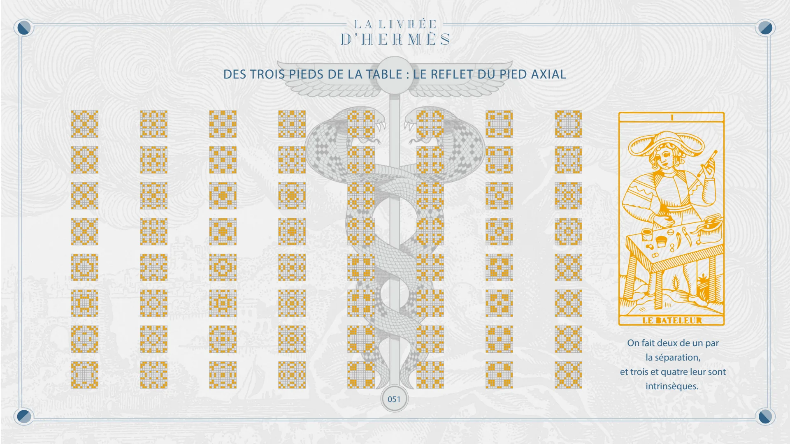
DES TROIS PIEDS DE LA TABLE : LE REFLET DU PIED AXIAL
On fait deux de un par la séparation, et trois et quatre leur sont intrinsèques.
051
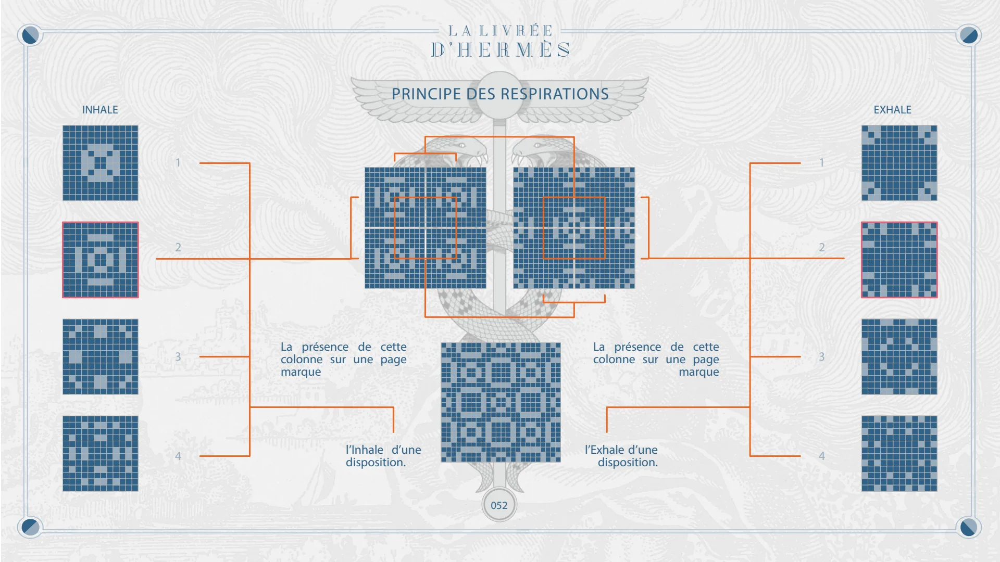
PRINCIPE DES RESPIRATIONS
INHALE
1 2 3
La présence de cette colonne sur une page marque
La présence de cette colonne sur une page marque
1 2 3
EXHALE
4
l’Inhale d’une disposition.
052
l’Exhale d’une disposition.
4
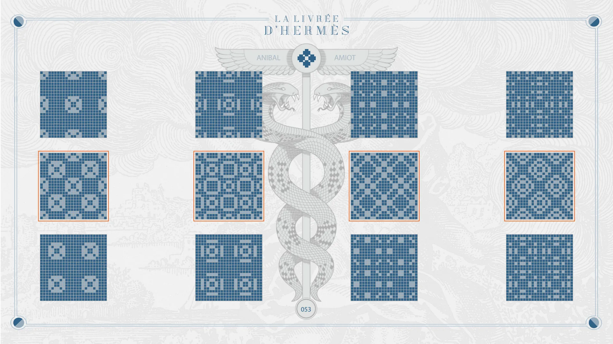
ANIBAL
053
AMIOT
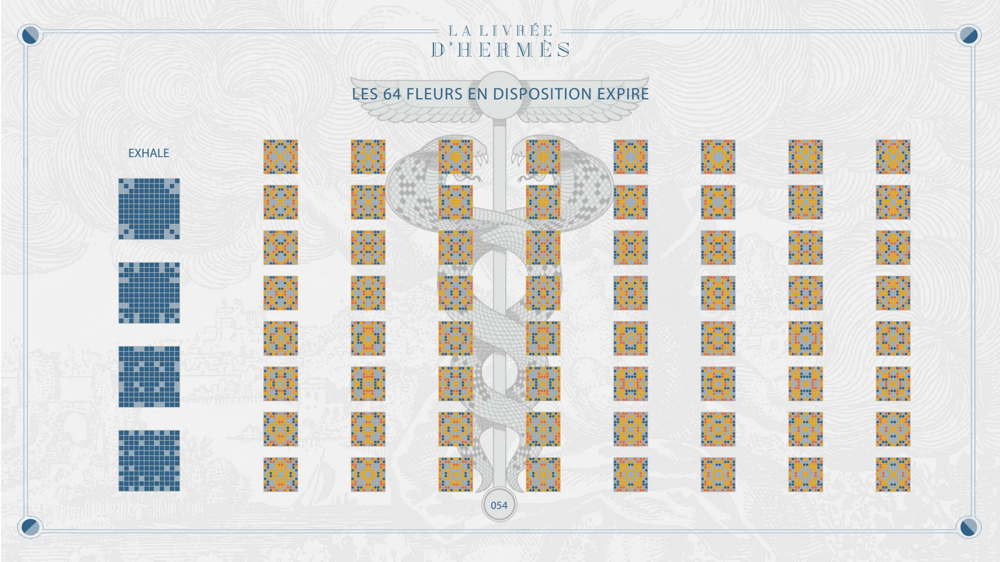
EXHALE
LES 64 FLEURS EN DISPOSITION EXPIRE
054
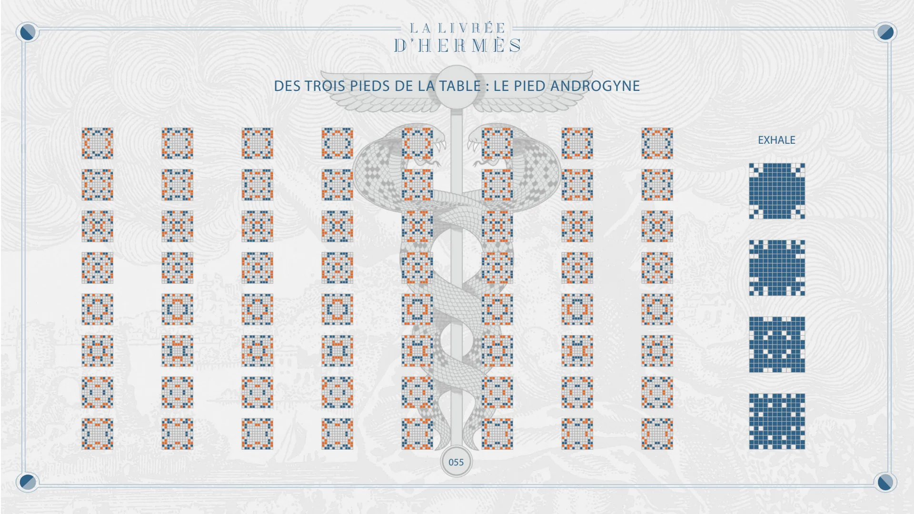
DES TROIS PIEDS DE LA TABLE : LE PIED ANDROGYNE
055
EXHALE
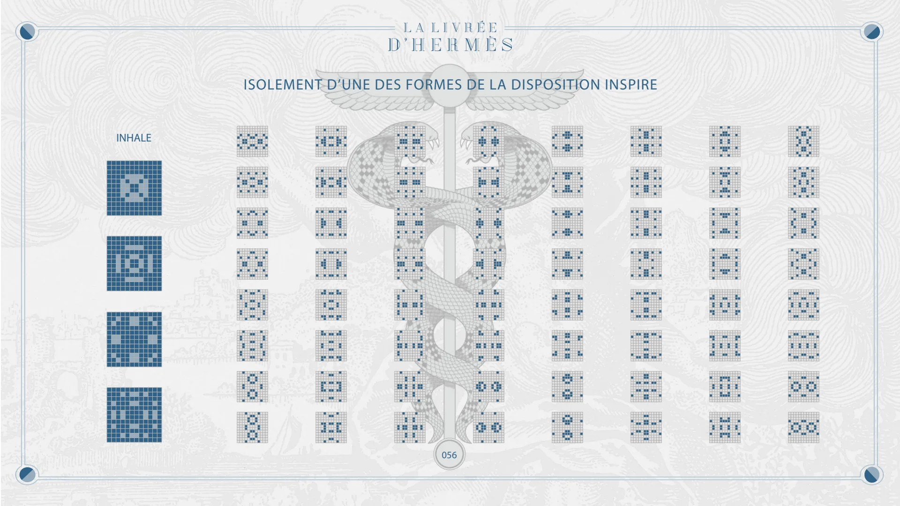
INHALE
ISOLEMENT D’UNE DES FORMES DE LA DISPOSITION INSPIRE
056
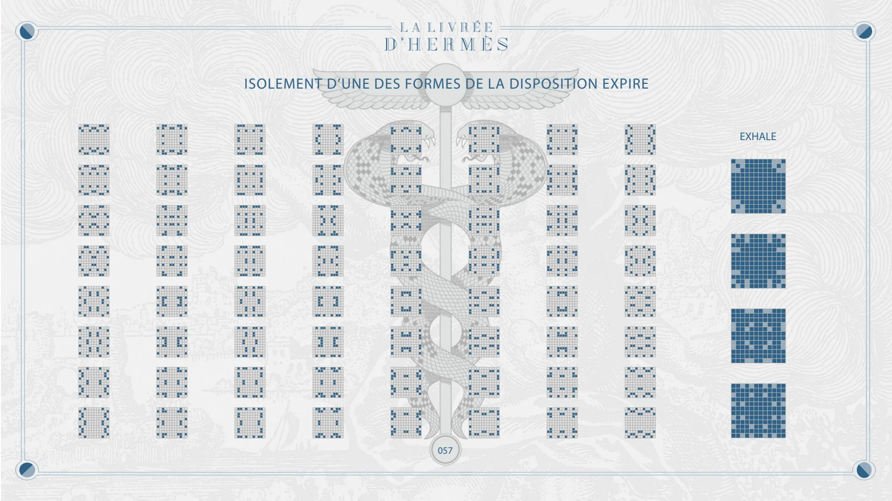
ISOLEMENT D’UNE DES FORMES DE LA DISPOSITION EXPIRE
057
EXHALE
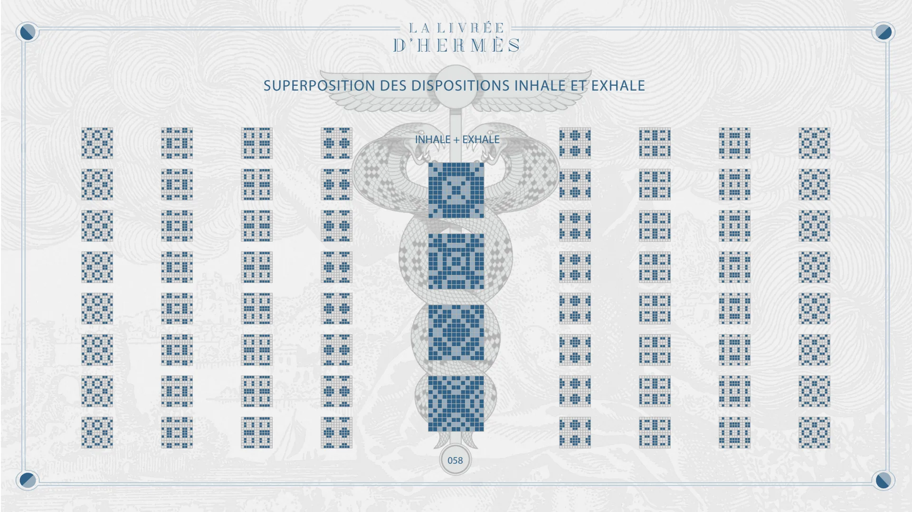
SUPERPOSITION DES DISPOSITIONS INHALE ET EXHALE
INHALE + EXHALE
058
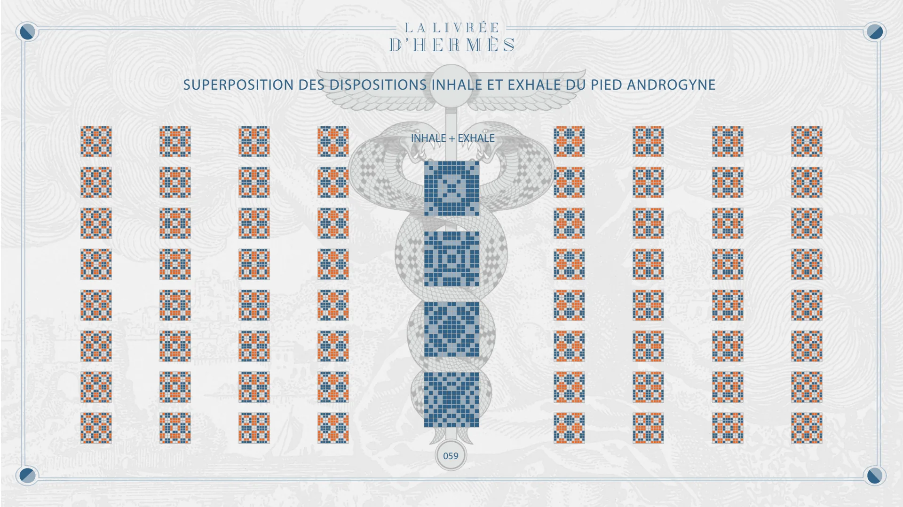
SUPERPOSITION DES DISPOSITIONS INHALE ET EXHALE DU PIED ANDROGYNE
INHALE + EXHALE
059
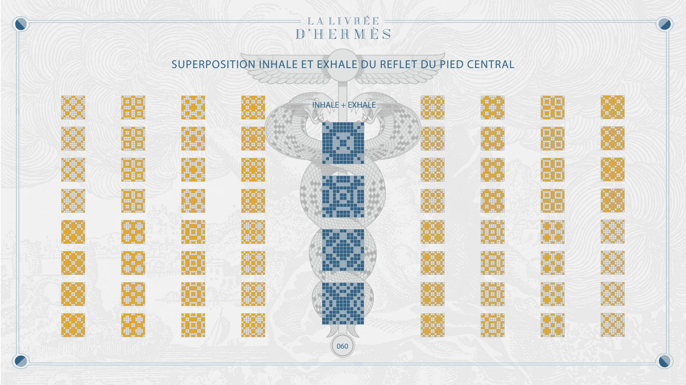
SUPERPOSITION INHALE ET EXHALE DU REFLET DU PIED CENTRAL
INHALE + EXHALE
060
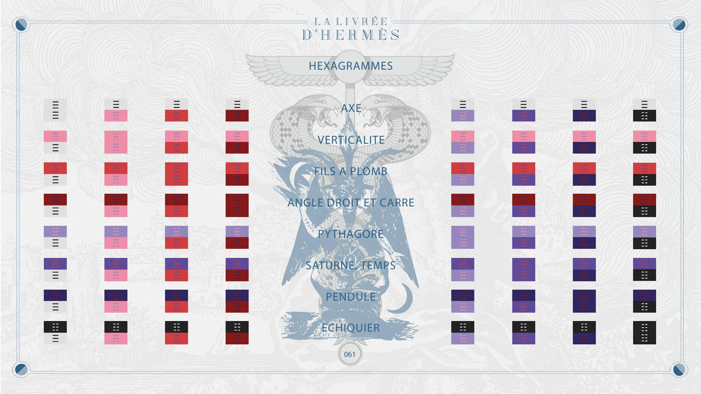
HEXAGRAMMES
AXE
VERTICALITE
FILS A PLOMB
ANGLE DROIT ET CARRE
PYTHAGORE
SATURNE, TEMPS
PENDULE
ECHIQUIER
061
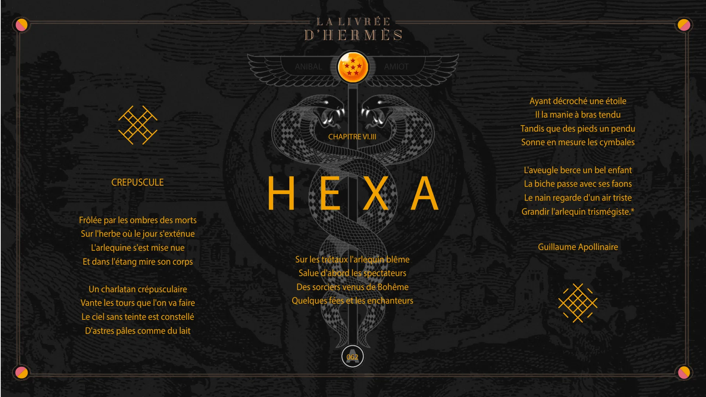
CREPUSCULE
Frôlée par les ombres des morts Sur l'herbe où le jour s'exténue L'arlequine s'est mise nue Et dans l'étang mire son corps
Un charlatan crépusculaire Vante les tours que l'on va faire Le ciel sans teinte est constellé D'astres pâles comme du lait
ANIBAL
AMIOT
CHAPITRE VI.III
HEXA
Sur les trétaux l'arlequin blême Salue d'abord les spectateurs Des sorciers venus de Bohême Quelques fées et les enchanteurs
Ayant décroché une étoile Il la manie à bras tendu Tandis que des pieds un pendu Sonne en mesure les cymbales
L'aveugle berce un bel enfant La biche passe avec ses faons Le nain regarde d'un air triste Grandir l'arlequin trismégiste.*
Guillaume Apollinaire A 062
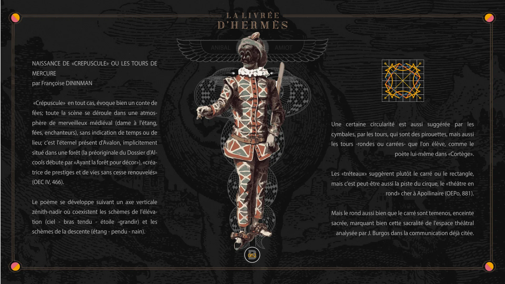
NAISSANCE DE «CREPUSCULE» OU LES TOURS DE MERCURE par Françoise DININMAN
ANIBAL
«Crépuscule» en tout cas, évoque bien un conte de fées; toute la scène se déroule dans une atmosphère de merveilleux médiéval (dame à l'étang, fées, enchanteurs), sans indication de temps ou de lieu; c'est l'éternel présent d'Avalon, implicitement situé dans une forêt (la préoriginale du Dossier d'Alcools débute par «Ayant la forêt pour décor»), «créatrice de prestiges et de vies sans cesse renouvelés» (OEC IV, 466).
Le poème se développe suivant un axe verticale zénith-nadir où coexistent les schèmes de l'élévation (ciel - bras tendu - étoile -grandir) et les schèmes de la descente (étang - pendu - nain).
AMIOT
Une certaine circularité est aussi suggérée par les cymbales, par les tours, qui sont des pirouettes, mais aussi les tours -rondes ou carrées- que l'on élève, comme le poète lui-même dans «Cortège».
Les «tréteaux» suggèrent plutôt le carré ou le rectangle, mais c'est peut-être aussi la piste du cirque, le «théâtre en rond» cher à Apollinaire (OEPo, 881).
Mais le rond aussi bien que le carré sont temenos, enceinte sacrée, marquant bien cette sacralité de l'espace théâtral analysée par J. Burgos dans la communication déjà citée.
B 062
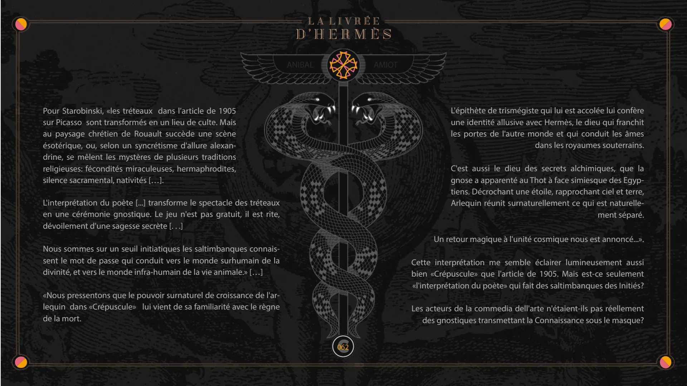
Pour Starobinski, «les tréteaux dans l'article de 1905 sur Picasso sont transformés en un lieu de culte. Mais au paysage chrétien de Rouault succède une scène ésotérique, ou, selon un syncrétisme d'allure alexandrine, se mêlent les mystères de plusieurs traditions religieuses: fécondités miraculeuses, hermaphrodites, silence sacramental, nativités […].
ANIBAL
L'interprétation du poète [...] transforme le spectacle des tréteaux en une cérémonie gnostique. Le jeu n'est pas gratuit, il est rite, dévoilement d'une sagesse secrète [. . .]
Nous sommes sur un seuil initiatiques les saltimbanques connaissent le mot de passe qui conduit vers le monde surhumain de la divinité, et vers le monde infra-humain de la vie animale.» […]
«Nous pressentons que le pouvoir surnaturel de croissance de l'arlequin dans «Crépuscule» lui vient de sa familiarité avec le règne de la mort.
AMIOT
L'épithète de trismégiste qui lui est accolée lui confère une identité allusive avec Hermès, le dieu qui franchit les portes de l'autre monde et qui conduit les âmes dans les royaumes souterrains.
C'est aussi le dieu des secrets alchimiques, que la gnose a apparenté au Thot à face simiesque des Egyptiens. Décrochant une étoile, rapprochant ciel et terre, Arlequin réunit surnaturellement ce qui est naturellement séparé.
Un retour magique à l'unité cosmique nous est annoncé...».
Cette interprétation me semble éclairer lumineusement aussi bien «Crépuscule» que l'article de 1905. Mais est-ce seulement «l'interprétation du poète» qui fait des saltimbanques des Initiés?
Les acteurs de la commedia dell'arte n'étaient-ils pas réellement des gnostiques transmettant la Connaissance sous le masque?
C 062
© Anibal Edelberto Amiot. CC BY-NC 4.0 — creativecommons.org/licenses/by-nc/4.0 · DOI 10.5281/zenodo.22722485